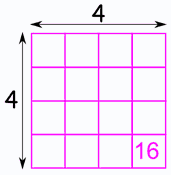

A square root of a number is a value that, when multiplied by itself, gives the number.
Example: 4 × 4 = 16, so a square root of 16 is 4.
Note that (−4) × (−4) = 16 too, so −4 is also a square root of 16.
The symbol is √ which always means the positive square root.
Example: √36 = 6 (because 6 x 6 = 36)